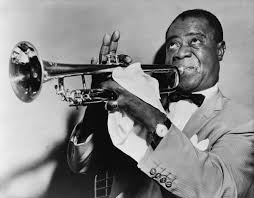
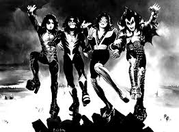
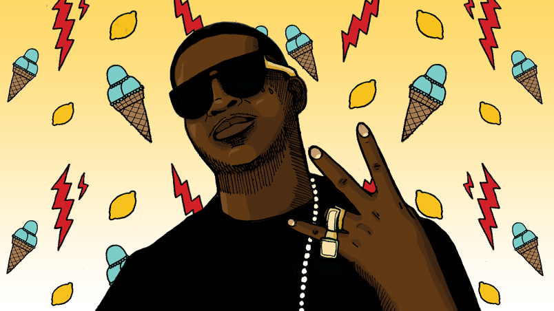

1 / 3

Jazz is a music genre that originated in African American communities of New Orleans, United States, in the late 19th and early 20th centuries, and developed from roots in blues and ragtime. Since the 1920s Jazz Age, jazz has become recognized as a major form of musical expression. It then emerged in the form of independent traditional and popular musical styles, all linked by the common bonds of African American and European American musical parentage with a performance orientation. Jazz is characterized by swing and blue notes, call and response vocals, polyrhythms and improvisation.
2 / 3

Rock music is a broad genre of popular music that originated as "rock and roll" in the United States in the early 1950s, and developed into a range of different styles in the 1960s and later, particularly in the United Kingdom and the United States. It has its roots in 1940s and 1950s rock and roll, a style which drew heavily on the African-American genres of blues and rhythm and blues, and from country music. Rock music also drew strongly on a number of other genres such as electric blues and folk, and incorporated influences from jazz, classical and other musical styles. Musically, rock has centered on the electric guitar, usually as part of a rock group with electric bass and drums and one or more singers. Typically, rock is song-based music usually with a 4/4 time signature using a verse–chorus form, but the genre has become extremely diverse. Like pop music, lyrics often stress romantic love but also address a wide variety of other themes that are frequently social or political.
3 / 3

Country music often consists of ballads and dance tunes with generally simple forms, folk lyric and harmonies accompanied by mostly string instruments such as banjos, electric and acoustic guitars, steel guitars (such as pedal steels and dobros), and fiddles as well as harmonicas. Blues modes have been used extensively throughout its recorded history.
3 / 3

Hip hop music, also called hip-hop or rap music, is a music genre developed in the United States by inner-city African Americans in the 1970s which consists of a stylized rhythmic music that commonly accompanies rapping, a rhythmic and rhyming speech that is chanted. It developed as part of hip hop culture, a subculture defined by four key stylistic elements: MCing/rapping, DJing/scratching with turntables, break dancing, and graffiti writing. Other elements include sampling beats or bass lines from records (or synthesized beats and sounds), and rhythmic beatboxing. While often used to refer solely to rapping, "hip hop" more properly denotes the practice of the entire subculture. The term hip hop music is sometimes used synonymously with the term rap music, though rapping is not a required component of hip hop music; the genre may also incorporate other elements of hip hop culture, including DJing, turntablism, scratching, beatboxing, and instrumental tracks.
3 / 3

Reggae (/ˈrɛɡeɪ/) is a music genre that originated in Jamaica in the late 1960s. The term also denotes the modern popular music of Jamaica and its diaspora. A 1968 single by Toots and the Maytals, "Do the Reggay" was the first popular song to use the word "reggae," effectively naming the genre and introducing it to a global audience. While sometimes used in a broad sense to refer to most types of popular Jamaican dance music, the term reggae more properly denotes a particular music style that was strongly influenced by traditional mento as well as American jazz and rhythm and blues, especially the New Orleans R&B practiced by Fats Domino and Allen Toussaint, and evolved out of the earlier genres ska and rocksteady. Reggae usually relates news, social gossip, and political comment. Reggae spread into a commercialized jazz field, being known first as ‘Rudie Blues’, then ‘Ska’, later ‘Blue Beat’, and ‘Rock Steady’. It is instantly recognizable from the counterpoint between the bass and drum downbeat, and the offbeat rhythm section. The immediate origins of reggae were in ska and rock steady; from the latter, reggae took over the use of the bass as a percussion instrument.